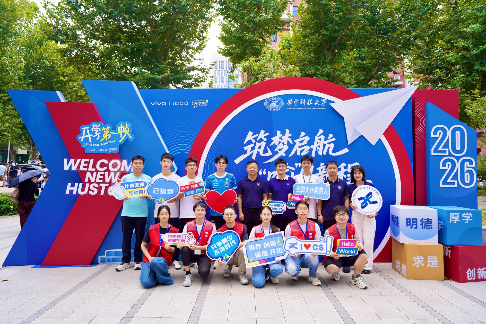
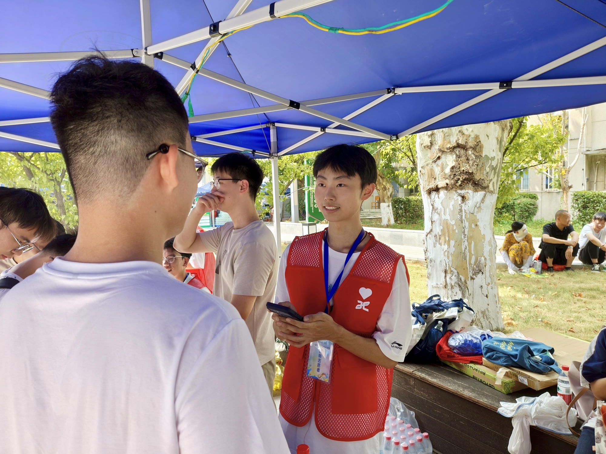
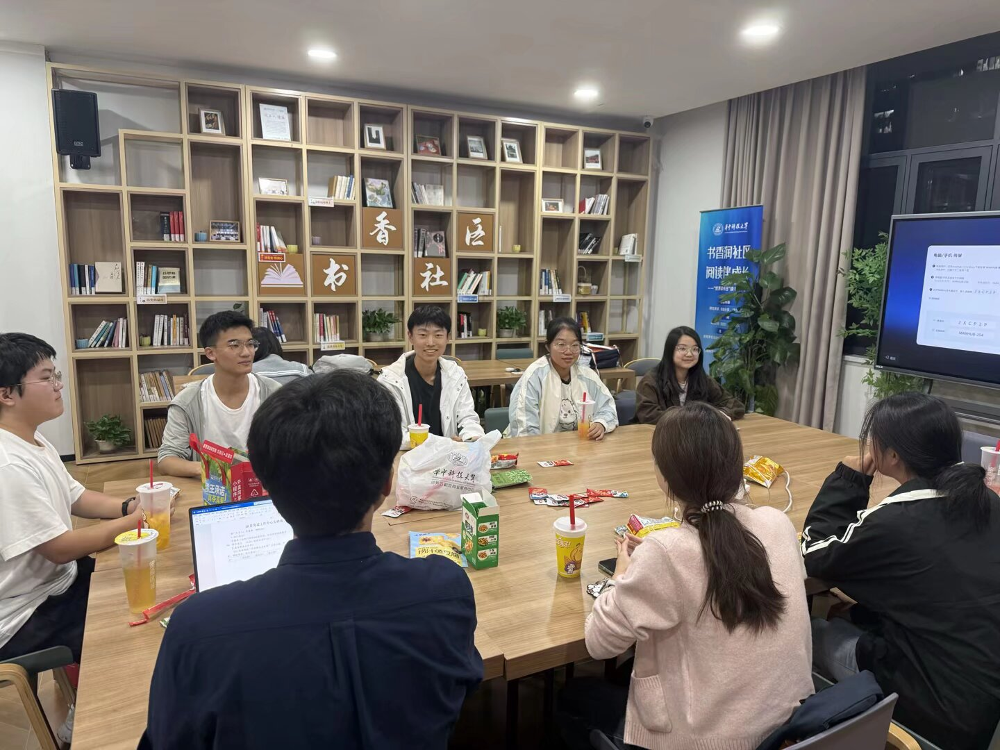
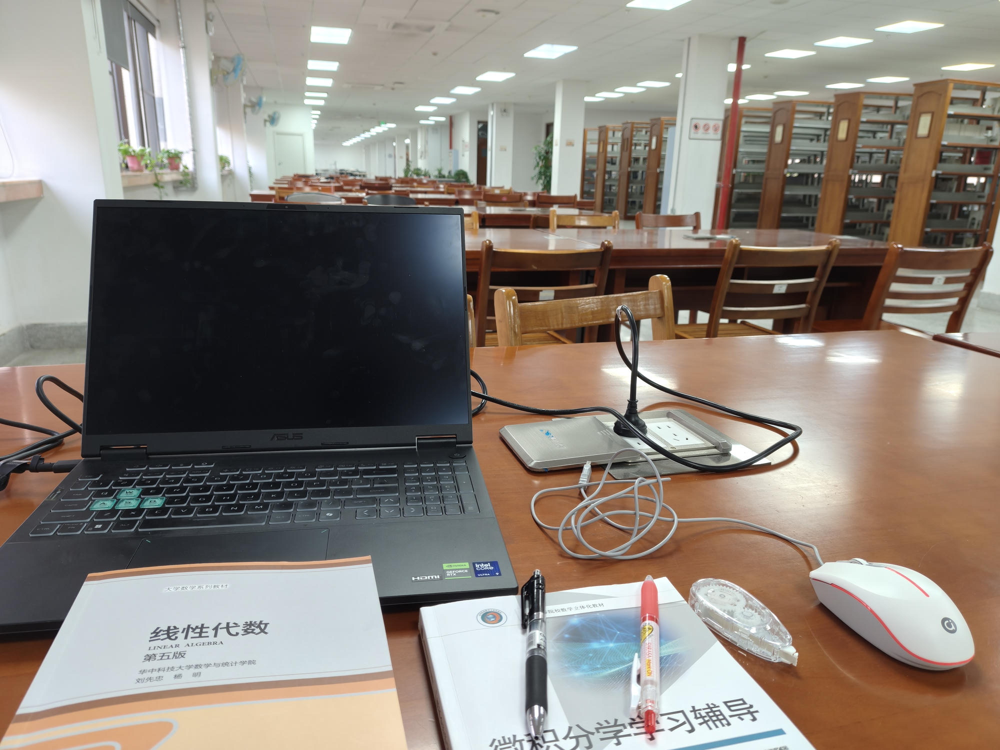
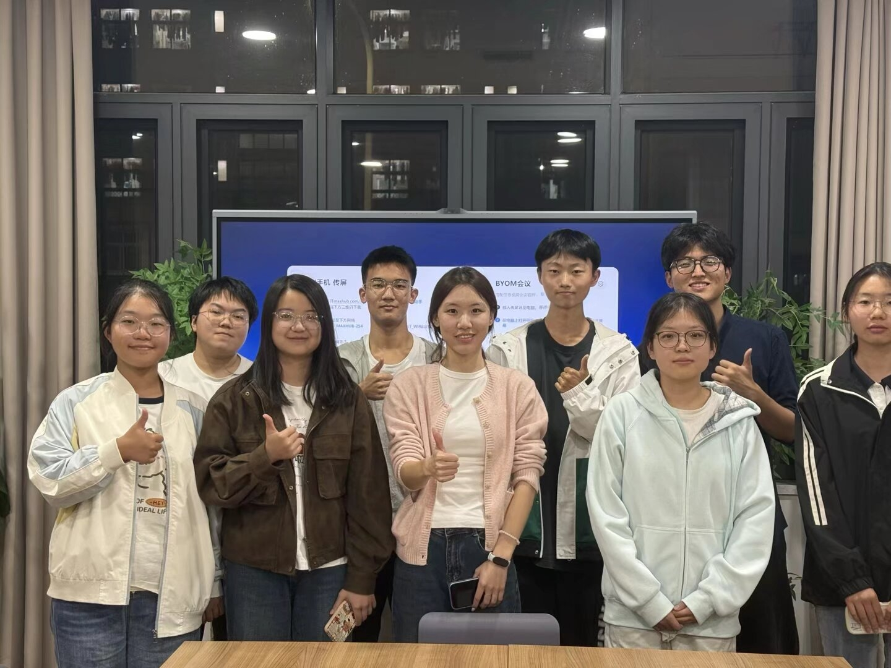
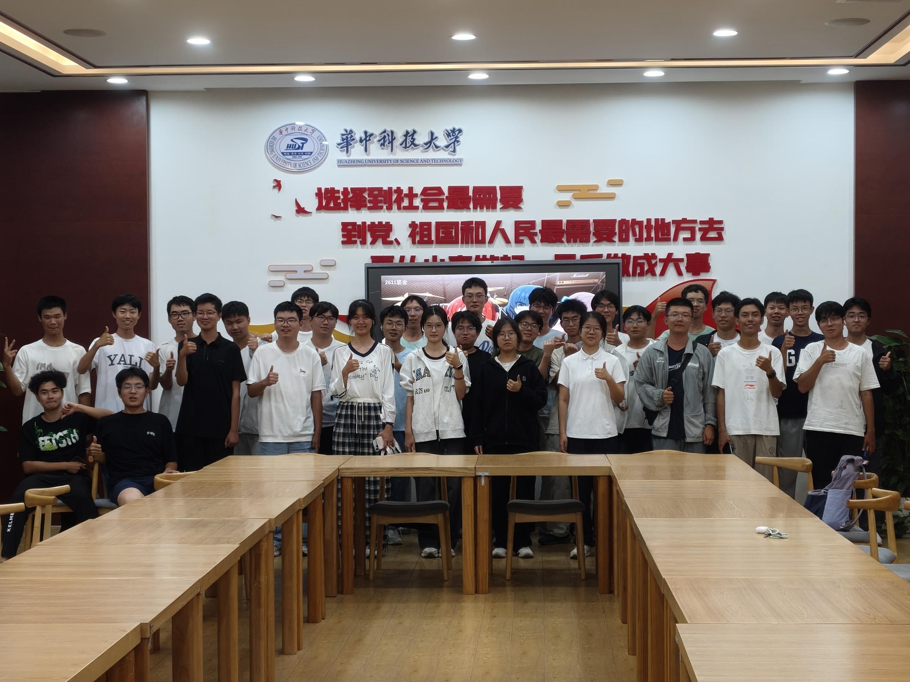
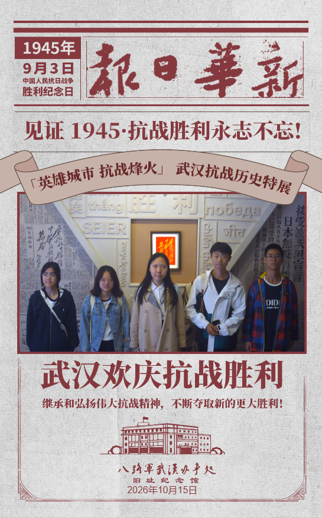
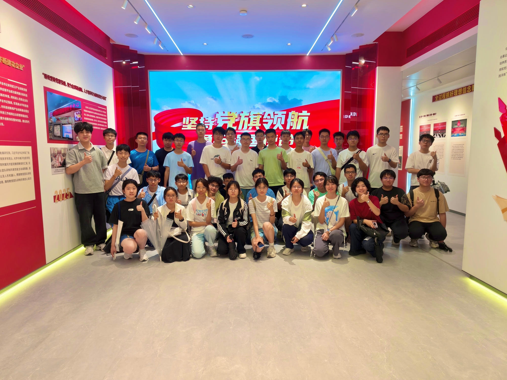
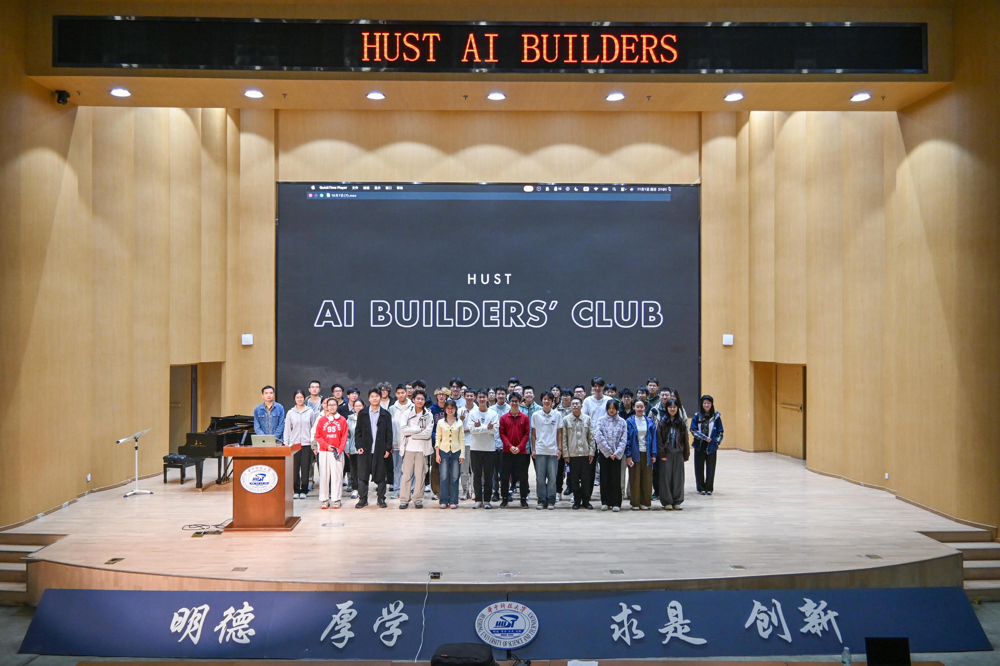

MOMENTS TO REMEMBER
一起参与，一起成长
以下照片记录了社团、迎新、志愿服务、学习交流与校园文化活动。每一场活动，都是认识新朋友、尝试新事物的机会。








参与活动请遵循现场安排，拍摄和分享他人照片前也记得尊重对方意愿。
 喻园拾光A LITTLE CAMPUS GUIDE
喻园拾光A LITTLE CAMPUS GUIDE
04 / AFTER CLASS
社团活动、志愿服务、读书交流和朋友相聚，都是校园生活里鲜活的一部分。用照片留住这些一起参与、一起成长的时刻。

MOMENTS TO REMEMBER
以下照片记录了社团、迎新、志愿服务、学习交流与校园文化活动。每一场活动，都是认识新朋友、尝试新事物的机会。







